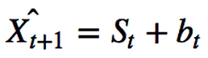

Unsupervised Learning
- Datapoints do not have any outcomes, or target is unknown.
- We are interested in the structure of the data or the patterns within the data.
-
Types:
-
Clustering:
Algorithm like:
- K-Means
- Hierarchical Agglomerative Clustering
- DBSCAN
- Mean shift
-
Dimensionality Reduction:
Algorithm like:
- PCA
- Non-negative matrix factorization
- They are important because of the curse of dimensionality .
- .. which means that as no of features increases performance gets worse, and cost or the number of training examples required increases.
-
Clustering:
Algorithm like:
-
Many use cases like:
- Classification
- Anomaly Detection
- Customer Segmentation
- Improve Supervised Learning
Timeseries Analysis
- used for forecasting
- data correlated over time; and are often non-stationary. Thus, very hard to model.
- needs a lot of data
- propagation of forecast error from one period to another
- Time Series: sequence of data points that are organized in time. Data is equally spaced points in time. Irregular data is not considered Time Series.
- standard measures like forecast miss and error rates by horizon can be misleading
-
- Univariate : Single data series (could be continuous, binary or categorical); can be multiple unrelated or related series; could be conditional series
- Panel/Multivariate : Multiple related series with identifying groups like customer types, department etc; may be used for joint estimation across series
- some important functions for plotting are: plot_acf(), plot_pacf(), month_plot(), quarter_plot()
Autocorrelation Plot
TODO
- autocorrelation means todays data is highly dependent on some past value
- time interval between correlated values is called lag
- a simple way to remove autocorrelation in some degree is to perform subtraction with the lagged data, ie., data (t) = data_old(t) - data_old(t-delta)
Decomposing Time series
- Decomposition allows to remove the deterministic components of data, and make modeling easier.
- Trend: Long Term direction, Seasonality: Periodic Behavior, Residual: Irregular/random Fluctuations that is left after trend or seasonality is removed.
- Models perform better if we remove known sources of variation. For example, trend and seasonality.
-
Types of decomposition:
- Additive decomposition:
- Multiplicative decomposition:
- Pseudo-additive: combination of both above, for example, we expect a multplicative model, but there could be zero in the value.
-
How to decompose?
- Single, double or triple exponential smoothing
- Locally Estimated Scatterplot Smoothing (LOESS)
- Frequency based methods: uses spectral analysis
in python use, from statsmodels.tsa.seasonal import seasonal_decompose . The output gives out all the three components, trend, seasonal and residuals. We can specify additive or multiplicative as the model to be used. The freq or the period argument is an important hyperparameter.
Stationarity
-
Stationary data means having same mean and variance over time. 4 key properties of a stationary series are:
- constant mean
- constant variance
- constant autocorrelation structure
- no periodic component
-
non-stationary models are very hard to model. Approach to handle non-stationary model is as follows:
- identify the source of non-stationary
- transform series to make it stationary
- build models with stationary series
- Augmented-Dickey Fuller Test can be used to identify if a series is stationary or not. Other method is the visual method,to identify the 4 properties mentioned above.
-
from statsmodels.tsa.stattools import adfuller adf,pvalue,usedlag,nobs,critical_value,icbest = adfuller(data)
p-value too small means its not stationary. ADF value can sometimes be misleading in concluding the stationarity of the series. This is true in variance fluctuating series (heteroscadicity series)
-
Sources of non-stationarity in time series data:
- changes in trend and changes in variance (heteroscedasticity)
- dependence on recent observations (autocorrelation)
- seasonal patterns
-
To forecast time series data, we need to find if:
- our data is non-stationary
- what causes non-stationarity in our data.
- can we transform our data into a stationary series that can be modeled
-
identifying non stationarity:
- run sequence plots
- looking at summary stats: divide data into chunks and look at mean, variance
- histogram plots: stationary data is close to normal distribution
- statistical tests: like Augmented Dickey Fuller test; when p-value is less than 0.5, series in stationary
- best to use more than one technique above
-
Common transformations to create stationary data from non-stationary data:
- remove trend and seasonality
- remove variances: squash the large values by appliying log transformation
- remove autocorrelation: subtract data with data (t-lag)
-
Time series smoothing
- imporves the ability to forecast by reducing the impact of noise, improves forward looking forecast
- Simple Average Smoothing
- Equally Weighted Moving Average
- Exponentially Weighted Moving Average
- Exponential Smooting : apply exponential weights to the values that are in the window for moving average. The weight is applied such that recent values are given more weights. It is more sensitive to local changes.
-
Single Exponential Smoothing:
It does not pick seasonality nor trend. -
from statsmodels.tsa.api import SimpleExpSmoothing single = SimpleExpSmoothing(train).fit(optimized=True) single_preds = single.forecast(10) # predict 10 future points
-
Double Exponential Smooting:
has the ability to have trend. For this a second component is added.
but fails to pick seasonality
 -
from statsmodels.tsa.api import Holt double = Holt(train).fit(optimized=True) double_preds = double.forecast(10) # predict 10 futurepoints
-
Triple Exponential Smoothing:
has the ability to pick up seasonality by adding a third term. Here, L is the length of seasonality

-
from statsmodels.tsa.api import ExponentialSmoothing triple = ExponentialSmoothing(train, trend="additive", seasonal="additive", seasonal_periods=13).fit(optimized=True) triple_preds = triple.forecast(10)
-
ARMA
: combines two models, Autoregressive (AR) models that anticipate series dependence on its own past values; And Moving Average (MA) models that anticipate series dependece on past forecast errorss.
- The combination of AR and MA is called ARMA model, also called Box-Jenkins Approach.
- AR(p) is assumed to depend on last p values of the time series.Thus the forecast takes the form of a linear combination of the past p- vlaues
- MA(q) is assumed to depend on last q-values of the forecast error. Thus the current forecast is the linear combination of the past q- forecast errors.
- The overall forecast is the sum of both the AR and MA aspect discussed in two points above.
- ARMA assumes the model to be stationary, and the timeseries does not contain a seasonal component.
-
How to determine seasonality in a plot?
-
Autocorrelation plot:
- summarizes total correlation between a variable and its past values.
-
Partial Autocorrelation plot:
- also shows the dependence on past observations
- however it measures partial results, including all lags
-
Seasonal Subseries Plot
- Shows seasonal average levels for each seasonal period
-
Autocorrelation plot:
-
To determine p and q, following approaches can be taken:
-
To look at the autocorrelation or partial autocorrelation plots;
- For p in AR(p): in the partial autocorrelation plot (PACF), add confidence intervals. And choose p such that the partial correclation is insignificant for p+1 and beyond.
- For q in MA(q): in the autocorrelation plot (AFC), add confidence intervals. Choose q such that autocorrelation is insignificant for q+1 and beyond
-
Following shows which kinds of model to choose based on shape of ACF or PACF model:
- To treat p and q as hyperparameter, and apploy grid search, cross validation etc
-
To look at the autocorrelation or partial autocorrelation plots;
- If a process depends on previous values of itself, it is an AR process; If a process depends on previous errors than it is an MA process.
- AR models with propogate dependency infinitely; whereas MA models do not propagate the shock infinitely
- AR process will exhibit exponential decay in ACF and a cut-off in PACF.
- MA process will exhibit exponential decay in PACF and a cut off in ACF.
-
Following table shows this in a bit detail:
- To tune parameters of ARMA model, since it can be non-linear problem: Non-linear least squares and MLE are common approaches. But most software will do that for us.
-
import statmodels.api as sm model = sm.tsa.ARMA(sample_datam, (2,0)).fit(trend='nc',disp=0) #(2,0) means we want p=2, q=0 model.params # this will give out two values; will give out 1 value for p=1, q=0
-
For testing purpose, we can also generate data using following
from statsmodels.tsa.arima_process import arma_generate_sample
- Similarly, for MA modeling, the same code for AR as above can be used, but with q=1 or q=2.
ARIMA and SARIMA
- To adapt the ARMA model to deal with integrated (ARIMA) and seasonal models (Seasonal ARIMA).
- Integrated series are a result of adding previous values together, like Stock Prices (integrated) and stock returns. Such integrated series can be transformed into stationary by subtracting the previous value from each observation.
- ARIMA extends ARMA for integrated series. It has three components. AR model , Integrated component and MA model
- ARIMA is denoted as (p,d,q), where p is the order of AR model, d is the number of times to the difference the data, and q is the order of MA model. All non-negative integers.
- Differencing nonstationary time series data one or more times can make it stationary. This gives the integrated component. d gives the number of times to perform a (t-1) difference on the data.
- SARIMA incorporates seasonal component. It is represented as (p,d,q)(P,D,Q), where uppercase items represent the metrics across a season. For the difference, for example if we are dealing with yearly data, we subtract with items of last year.
-
Techniques for generating p, d, q, P, D, Q:
- visual inspection; generate ACF, PACF plot.
- treat as hyperparameters and corss validate.
- examine information criteria (AIC, BIC) which penalize the number of parameters the model uses.
- Automated selection using some software is also available
-
Assumptions for ARIMA, SARIMA
- time series in stationary;
- if non stationary, remove trend, seasonality, apply differencing
- the past is assumed to represent what will happen in future, in a probabilistic sense.
from statsmodels.tsa.statspace.sarimax import SARIMAX srma = sm.tsa.statesace.SARIMAX(data[temp], order=(p,d,q), seasonal_order=(0,1,1,12), trend='c').fit() srma.summary() srm.predict(start=start_idx,end=end_idx) # predict values for given index range
The AIC and BIc values printed from the summary() above should be as little as possible
There are auto fit models that will try to find the best models and bit the data. For example, for ARIMA, there is auto_arima .
Facebook prophet
It adds g(t), s(t), h(t). Its an additive model. g(t) models the non-periodic functions, s(t) models the seasonality and h(t) models the holidays. we would prefer historical data of at least a year preferrably to make a good prediction.
from fbprophet import Prophet model = Prophet() #you make want to take a log of data before fit() to make the variance smaller model.fit(my_data) #let us make a prediction for a year, by supplying 365 (no of days) #.. this will create an empty dataframe with just the dates forecast_dates = model.make_future_dataframe(periods=365) forecast = model.predict(future)
To work with holidays, for the train data, you must specify the holidays in a dataframe; and supply this df as argument when creating Prophet object, for example, model=Prophet(holidays=holidays)thanksgiving = pd.DataFrame({ 'holiday': 'thanksgiving', 'ds': pd.to_datetime(['xxxx-xx-xx','xxxx-xx-xx']), 'lower_window': 0, 'upper_window': 1, }) # Similarly, create more if you want to holidays = pd.concat((thanksgiving,another_holiday)) model = Prophet(holidays=holidays) forecast = model.fit(my_data).predict(forecast_dates)
You can also add regressor using add_regressor , and do a cross validation using .cross_validation()
Deep Learning
- Automatically able to capture complex patterns and characteristics of time series like trend, seasonality and complex autocorrelations.
- can simlulatneously model many related series, rather than just one.
- cons: often overfit
- cons: challenging to interpret, more like black box
- cons: computationally expensive
RNN: Recurrent Neural Networks
- maps a sequence of inputs to predicted outputs. Most common format is many-to-one format, which maps many input sequence to one input value.
- Here, input sequence is fed to update or learn the hidden state. After the hidden state is learned, the model uses the hidden state can be used to predict the output.
- Learns patterns, and seasonality.
- but has dependency over many time steps, and its a problem for RNNs to capture long term dependencies. Thus, LSTM is introduced.
- Following is basic of how RNNs work:
-
- Three trainiable metrics: U, V and W.
- hidden states are represented as h(i)
- sigmoid is the activation function, fn(x) = e^x/(e^x + 1)
- Weight metrics are applied as linear transformation
- Hidden state is updated as h(i) = fn(U*t(i) + V*h(i-1)) , and t(out) = W*h(out-1)
-
LSTM
- LSTM take longer to train than RNNs, and are more prone to overfitting.
- For each state of time, there is a hidden state and a cell state that allows a long term memory.
- the network regulate information flow and memory storage; and they control how memory states are updated and information is passed forward.
- gating at each state; and some information might be forgotten if deemed not necessary.
- cons: slower to train because of slow backpropagation, and more prone to overfit. More parameters needed.
- When the sequence are too long, RNN may perform poorly so choose LSTM. But LSTMs are expensive computationally.
Coding examples for RNN:
import tensorflow as tf from tensorflow import keras from tensorflow.keras.models import Sequential from tensorflow.keras.layers import Dense, SimpleRNN, LSTM, Activation, Dropout model = Sequential() noofhiddenunits = 10 #could be any number model.add(SimpleRNN(noofhiddenunits,input_shape=xxx)) model.add(Dense(1)) model.compile(loss='mean_squared_error',optimizer='adam') model.fit(x_train,y_train, epochs=epoch_num, batch_size=64) #to print the detail of the model model.summary()
Similar is the code example for LSTM:import tensorflow as tf from tensorflow import keras from tensorflow.keras.models import Sequential from tensorflow.keras.layers import Dense, SimpleRNN, LSTM, Activation, Dropout model = Sequential() noofhiddenunits = 10 #could be any number model.add(LSTM(noofhiddenunits,input_shape=xxx)) model.add(Dense(1)) model.compile(loss='mean_squared_error',optimizer='adam') model.fit(x_train,y_train, epochs=epoch_num, batch_size=64) #to print the detail of the model model.summary()
Survival Analysis
- to estimate risk; how likely an event is to occur
- Survival analysis is estimating the length of time until an event occurs.
- If our data are complete and unbiased, standard regression methods may work.
- Survival Analysis allows us to consider cases with incomplete or censored data.
-
Survival function measures the probability that a subject will survive past time t.
S(t) = P(T>t) where T is the time of event. - The function S(t) is non-increasing, and starts at 1.
- For high enough t, the value of S(t) is 0 and this is where S(t) ends.
-
Hazard Rate
is the instantaneous rate at which events occur, i.e.
h(t) = f(t)/S(t) . Sum of all the Hazard rates until a point of time t gives the cumulative hazard rate. This represents accumulated risk over time . -
Kaplan-Meier plot
can be used as a non-parametric estimator for survival probability.
- It plots the cumulative probability of survival beyond each point of time.
-
To use the Kaplan-Meier curve for our analysis. It gives sample averages.
from lifelines import KaplanMeierFitter model = KaplanMeierFitter() #here, month and churn are two pd series; for example month and churn values of customers etc model.fit(month, churn) model.plot()
-
Survival Regression
- KM curve gives sample averages; but we may want to use individual level data for survival rate prediction.
- survival regression allows us to generate estimates of total risk as a function of time
- makes use of censored and uncensored observations to predict hazard rates
- allow us to estimate feature effects
-
TODO: CPH model
- a tool for survival model.
- it assumes features have a constant proportional impact on the hazard rate.
- using CPH, we can plot estimated survival curves for various categories.